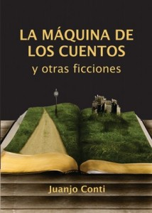

Mi libro de cuentos a la Feria del Libro
Hace unas semanas, un amigo me avisó de esta noticia:
Convocatoria para escritoresEl Ministerio de Innovación y Cultura de la Provincia de Santa Fe convoca a los escritores santafesinos que deseen exhibir y vender sus obras en el stand oficial de la 37a. Feria Internacional del Libro de Buenos Aires, a presentar sus obras hasta el 1º de abril inclusive en las sedes de recepción de Rafaela, Reconquista, Rosario, Santa Fe y Venado Tuerto.
Por cuarto año consecutivo, Innovación y Cultura convoca a escritores a esta Feria Internacional que se llevará a cabo del 20 de abril al 9 de mayo en el Predio de la Sociedad Rural de Palermo, Av. Sarmiento 2704.
Para esta edición, el gobierno de Santa Fe montará un stand de las mismas características en cuanto a tamaño, diseño e infraestructura respecto de las tres ediciones anteriores. Este año, el stand estará ubicado en el Pabellón Ocre (entrada por Plaza Italia).
Tenía mi tercer tirada apunto de imprimirse, así que pedí algunos antes y mi hermana me hizo el favor de llevarlos al Departamento de Literatura y Arte de la provincia, ya que yo estaba en Buenos Aires. El trato es así, llevan hasta 3 copias de tu libro y si lo venden te dan la plata. Si no, te los pueden devolver o se los podés dejar para que los muestren en otras ferias. Por supuesto, la plata es lo de menos y lo lindo es que el libro pueda llegar a más lectores.
{kind=link}
Así que ya saben, si van a la Feria del Libro en Buenos Aires, pueden comprar mi librito, o aunque sea pasar a ver si esta :)
Comentarios
Comments powered by Disqus